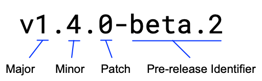

Module version numbering
A module’s developer uses each part of a module’s version number to signal the version’s stability and backward compatibility. For each new release, a module’s release version number specifically reflects the nature of the module’s changes since the preceding release.
When you’re developing code that uses external modules, you can use the version numbers to understand an external module’s stability when you’re considering an upgrade. When you’re developing your own modules, your version numbers will signal your modules’ stability and backward compatibility to other developers.
This topic describes what module version numbers mean.
See also
- When you’re using external packages in your code, you can manage those dependencies with Go tools. For more, see Managing dependencies.
- If you’re developing modules for others to use, you apply a version number when you publish the module, tagging the module in its repository. For more, see Publishing a module.
A released module is published with a version number in the semantic versioning model, as in the following illustration:

The following table describes how the parts of a version number signify a module’s stability and backward compatibility.
| Version stage | Example | Message to developers |
|---|---|---|
| In development | Automatic pseudo-version number
v0.x.x |
Signals that the module is still in development and unstable. This release carries no backward compatibility or stability guarantees. |
| Major version | v1.x.x | Signals backward-incompatible public API changes. This release carries no guarantee that it will be backward compatible with preceding major versions. |
| Minor version | vx.4.x | Signals backward-compatible public API changes. This release guarantees backward compatibility and stability. |
| Patch version | vx.x.1 | Signals changes that don't affect the module's public API or its dependencies. This release guarantees backward compatibility and stability. |
| Pre-release version | vx.x.x-beta.2 | Signals that this is a pre-release milestone, such as an alpha or beta. This release carries no stability guarantees. |
In development
Signals that the module is still in development and unstable. This release carries no backward compatibility or stability guarantees.
The version number can take one of the following forms:
Pseudo-version number
v0.0.0-20170915032832-14c0d48ead0c
v0 number
v0.x.x
Pseudo-version number
When a module has not been tagged in its repository, Go tools will generate a pseudo-version number for use in the go.mod file of code that calls functions in the module.
Note: As a best practice, always allow Go tools to generate the pseudo-version number rather than creating your own.
Pseudo-versions are useful when a developer of code consuming the module’s functions needs to develop against a commit that hasn’t been tagged with a semantic version tag yet.
A pseudo-version number has three parts separated by dashes, as shown in the following form:
Syntax
baseVersionPrefix-timestamp-revisionIdentifier
Parts
-
baseVersionPrefix (vX.0.0 or vX.Y.Z-0) is a value derived either from a semantic version tag that precedes the revision or from vX.0.0 if there is no such tag.
-
timestamp (yymmddhhmmss) is the UTC time the revision was created. In Git, this is the commit time, not the author time.
-
revisionIdentifier (abcdefabcdef) is a 12-character prefix of the commit hash, or in Subversion, a zero-padded revision number.
v0 number
A module published with a v0 number will have a formal semantic version number with a major, minor, and patch part, as well as an optional pre-release identifier.
Though a v0 version can be used in production, it makes no stability or backward compatibility guarantees. In addition, versions v1 and later are allowed to break backward compatibility for code using the v0 versions. For this reason, a developer with code consuming functions in a v0 module is responsible for adapting to incompatible changes until v1 is released.
Pre-release version
Signals that this is a pre-release milestone, such as an alpha or beta. This release carries no stability guarantees.
Example
vx.x.x-beta.2
A module’s developer can use a pre-release identifier with any major.minor.patch combination by appending a hyphen and the pre-release identifier.
Minor version
Signals backward-compatible changes to the module’s public API. This release guarantees backward compatibility and stability.
Example
vx.4.x
This version changes the module’s public API, but not in a way that breaks calling code. This might include changes to a module’s own dependencies or the addition of new functions, methods, struct fields, or types.
In other words, this version might include enhancements through new functions that another developer might want to use. However, a developer using previous minor versions needn’t change their code otherwise.
Patch version
Signals changes that don’t affect the module’s public API or its dependencies. This release guarantees backward compatibility and stability.
Example
vx.x.1
An update that increments this number is only for minor changes such as bug fixes. Developers of consuming code can upgrade to this version safely without needing to change their code.
Major version
Signals backward-incompatible changes in a module’s public API. This release carries no guarantee that it will be backward compatible with preceding major versions.
Example
v1.x.x
A v1 or above version number signals that the module is stable for use (with exceptions for its pre-release versions).
Note that because a version 0 makes no stability or backward compatibility guarantees, a developer upgrading a module from v0 to v1 is responsible for adapting to changes that break backward compatibility.
A module developer should increment this number past v1 only when necessary because the version upgrade represents significant disruption for developers whose code uses function in the upgraded module. This disruption includes backward-incompatible changes to the public API, as well as the need for developers using the module to update the package path wherever they import packages from the module.
A major version update to a number higher than v1 will also have a new module path. That’s because the module path will have the major version number appended, as in the following example:
module example.com/mymodule/v2 v2.0.0
A major version update makes this a new module with a separate history from the module’s previous version. If you’re developing modules to publish for others, see “Publishing breaking API changes” in Module release and versioning workflow.
For more on the module directive, see go.mod reference.